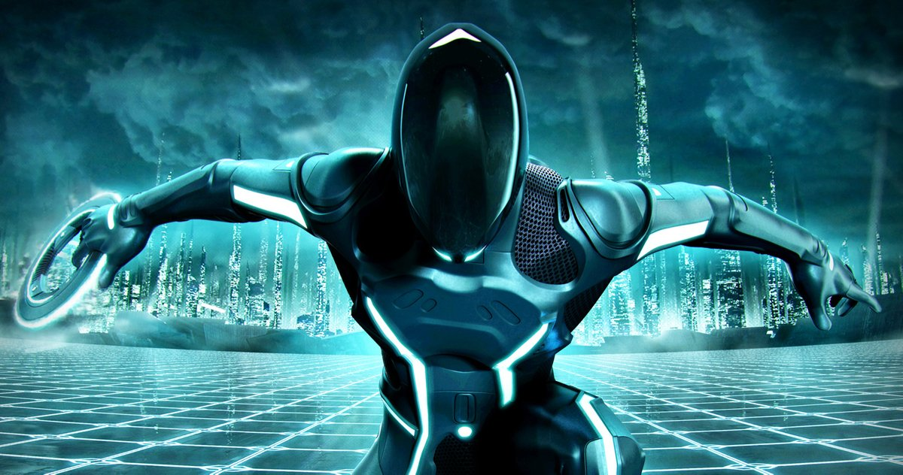
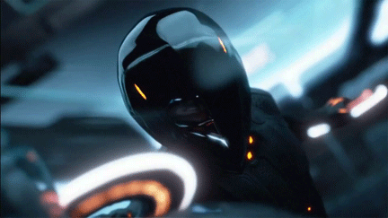

The Main Cast
The main star of Tron 3 is rumored to be non other than Jared Leto. He was featured in movies like Suicide Squad, Morbius, And House of Gucci. For most this is a very different pick
then we would have imagined inside our heads when we think of Tron 3 castings, but Jared leto has proved to be an amazing actor. He just hasen't gotten lucky with the scripts given, and roles as of late. The other cast members rumored to be
in Tron 3 are Bruce Boxleitner who is Tron of course, then garrett Hedlund, and Olivia Wilde. Jared Leto is the only one rumored so far that is very in your face as the other cast members were with us at the end of Tron Legacy.
So it would only make sense that they return. Bruce Boxleitner would be very suprising if he reprised his role as Tron. After Disney flip floped the IP he hasn't been in the best terms with them. A Tron movie just isn't a Tron Movie though without him.
Jeff Bridges isn't Rumored yet or confirmed to reprise his role so all we can do is hope the new frontier will return with CLU or Kevin Flynn.
Film Name
The rumored film name from a deleted Jared Leto tweet was Tron Ares. The film is still in the middle stages of production, so name changes could be frequent. Before the movie was cancelled back in 2011, it was called Tron Ascension. Back then the film never got past it's early stages before getting scraped to then now come back
20 years later. The film has so many directions it could take. So we can only hope as fans that the directors choose the same direction as they took Legacy. With the CGI we have now in 2021
this movie will blow away fans who were blown away by legacy. The 2 film names we know of can give us a little insight into what the film could be based on. Tron Ascension could have been refering to Kevin flynn as he has ascended into the code itself. Or it could have been refering to a more positive outlook
in that things could only go up from here. Tron Ares could be refering to the god of war in greek mythology. As we know a program was nicknamed Zues in Tron Legacy. So it wouldn't be weird at all to say there might be one nicknamed Ares as well.
Not only that, but it could be refering to the grid games themselves. The character nicknamed Ares might be the best of the best in the disk wars as well as the grid games. This would make sense as this is why they would be called Ares in the film.

Direction And Music
Tron 3 is being directed by Garth Davis. And produced by Jared leto, Justin Springer, and Emma Ludbrook. The is rumored to have the return of the best EDM music creators Daft Punk. Although Daft Punk have retired
it seems like they are going to cameo in Tron 3 as well as score it, while not confirmed this seems likely. As it seems like their realationship with disney is still going stronger than ever. I wouldn't put it past disney either to make sure
they can get Daft Punk either. For most Daft punk is one of the main reasons why Tron Legacy was so well executed. The colors lights, and overall themes of Tron fit Daft Punks MO in every way imaginable. The Director garth davis is known for the movies Lion as well as
Mary Magdalene. While the producers are known for Tron legacy, Oblivion, and Morbius.
Sequals after Tron 3
There are possibillitys that sequals could arrise from Tron 3 if it's a massive success in the box office. There was plans in the early stages of Tron 3 of 2 sequals after it, but after disney made the deal with Lucasfilm
for Star wars the project was ended. This then lead to the end of the Tron sequals. They could bring those back up as they did Tron 3 again if the movie ends up being a success. Tron is a very expansive universe with many different
ways to take the story with many different characters. If they greenlight multiple sequals after Tron 3 this could bring the expansive Tron Uprising show into the live action universe as well as the characters. It would be cool to see Beck
in live action or Dyson or even Tesler himself. Other rogues added to give CLU, and the Tron universe more depth is exactly what Tron needs. With a more in depth in the future of the Tron franchise this could become the next star wars if done right.
There is some catering to new fans they should follow, but they need to try as hard as they can to keep the older fans interested as well! This box office will boom if they get that catering correct because we as a fan base will drive the sales up,
but just like Tron Legacy it wont be enough they need to try to branch out the story just a bit to allow new comers to come in without needing to watch the original 1982 Tron movie. Although that movie was great for it's time, and is still a good Film
it's age is strating to show. Tron legacy was an amazing movie, but without seeing Tron 1982 you'd be mainly in the dark about what is happening at least with the story telling that is. If they can cater to new fans as well as make the old fans happy
there is no doubt that Tron sequals will be printed out of the Disney headquarters in no time!

{kind=link}
{kind=link}